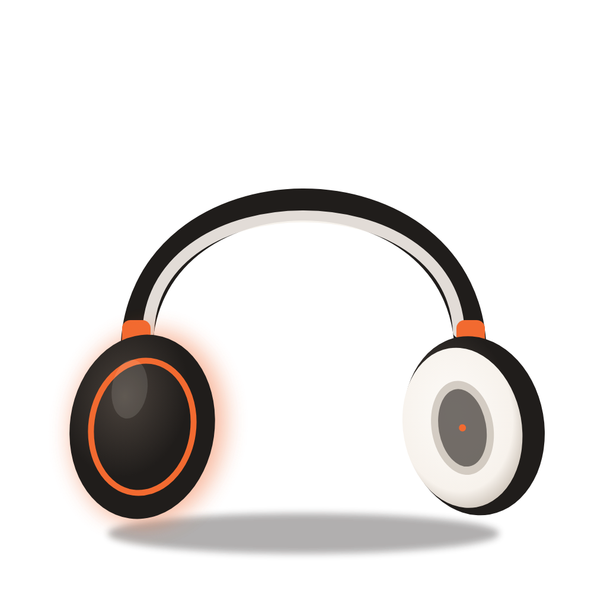

Pembukaan
Sapaan dari host, perkenalan singkat, dan gambaran obrolan hari ini.
Apa itu ERP, dan kenalan dengan framework Odoo.
Ngobrol santai bareng Handi, Direktur PT Pritech Indonesia, soal cara bisnis merapikan data dan proses lewat satu sistem.
Gerakkan kursor atau miringkan ponsel untuk melihat sekeliling. Ketuk titik oranye untuk membuka detailnya.
Buka studio 3D dan rakit setup-mu

Apa itu ERP, dan kenalan dengan framework Odoo.
Banyak bisnis masih mengandalkan spreadsheet yang tersebar di tiap divisi. Di episode ini kita bahas apa itu ERP, kapan sebuah bisnis butuh, dan kenapa Odoo sering dipilih perusahaan yang sedang tumbuh.
Siaran langsung di .
Buka tautannya saat acara mulai. Tidak perlu daftar, cukup klik dan dengarkan.
Lima bagian, satu alur. Dari dasar ERP sampai tanya jawab langsung dengan pembicara.
Sapaan dari host, perkenalan singkat, dan gambaran obrolan hari ini.
Dari data yang tercecer di banyak file sampai laporan yang bisa dipercaya. Kita bahas tanda-tanda bisnis mulai butuh satu sistem.
Bagaimana modul Odoo saling terhubung, seberapa fleksibel bisa disesuaikan, dan kenapa cocok untuk perusahaan yang sedang tumbuh.
Kirim pertanyaanmu saat siaran. Handi akan menjawab langsung, termasuk kasus dari bisnismu sendiri.
Rangkuman obrolan dan langkah yang bisa langsung kamu coba.
 Tamu I-Talk
Tamu I-Talk
Direktur PT Pritech Indonesia
[Kalimat pertama bio Handi, misalnya pengalamannya membantu perusahaan menerapkan ERP.] [Kalimat kedua, misalnya fokusnya saat ini di Pritech.]
Bayangkan tiap divisi punya catatan sendiri. ERP menyatukannya di satu pusat, jadi angka penjualan, stok, dan keuangan selalu nyambung. Pilih satu modul untuk melihat hubungannya.
Detail lengkapnya dibahas di bagian 03 saat siaran.
Siaran langsung di . Gratis, tanpa pendaftaran.